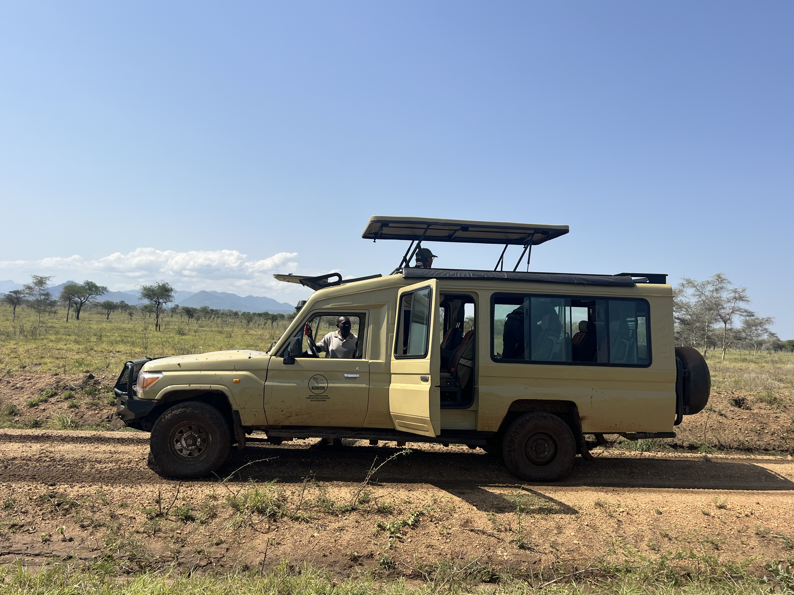

3 Days Safari
3 day Murchison Falls safari from Kampala
Plan three days in Murchison Falls National Park, with a game drive, a Nile boat cruise and a falls visit. Start in Kampala or Entebbe and discuss a Ziwa rhino-tracking stop along the way. Wildlife sightings vary.
Your safari, priced for your group. Share your dates, pickup point and lodge preference for an itemised quotation.
Quick Planning
Route times and best-fit travelers
Times are approximate and depend on road conditions, park timing, group pace, and stopovers.
- Best for first-time safari
- Best for photography
- Best for families
- Best for group tours
Sample Flow
Simple 3-day itinerary idea
Day 1
Depart Kampala or Entebbe, add Ziwa Rhino Sanctuary if requested, continue to Murchison Falls, and settle in near the park.
Day 2
Morning game drive for giraffes, elephants, hartebeests, buffaloes, antelopes, and patas monkeys, then take a Nile boat cruise.
Day 3
Visit the falls viewpoint, enjoy final photography stops where time allows, then return to Kampala or Entebbe.
Can Add
Bird watching, sport fishing by arrangement, Budongo chimpanzee plans, or an extra night for a slower family pace.
Questions
Murchison Falls Safari FAQ
Can you pick us from Entebbe Airport?
Yes. Share your arrival time, group size, and luggage details so Augur can plan airport pickup and the right vehicle.
Can Ziwa be added on the same route?
Yes. Ziwa Rhino Sanctuary works well as a stopover between Kampala or Entebbe and Murchison Falls.
How much is the safari?
Pricing is quote-based because vehicle type, lodge level, park activities, and group size change the final cost.
Understand your safari price
Compare the whole journey.
Request a written price for your dates and group. Ask for the total in a stated currency, the price per person where relevant, and the exact inclusions before confirming.
| Choice | What to ask Augur to specify |
|---|---|
| Travellers and rooms | Adults, children’s ages, number of rooms, and single or shared occupancy. |
| Accommodation | Named lodge or hotel, room category, number of nights and meals included. |
| Vehicle and route | Private or shared arrangements, vehicle type, pickup point, driver-guide and fuel. |
| Park activities | Park entry, game drives, boat cruise and other activities included in the quoted total. |
| Optional extras | Ziwa rhino tracking, additional nights, chimpanzee activities or route extensions quoted separately where requested. |
| Other costs | Confirm flights, visas, insurance, tips, personal purchases and drinks or meals that are outside the agreed plan. |
Different dates, lodge choices and group sizes change the cost. Your quotation will state what is included and excluded; availability is confirmed by the team.
Get a quote for this safari ↗Travel with a local team
Get to know Augur before you travel.
See our field photographs, read traveller feedback and discuss the people and vehicle arrangements for your journey.

A personal conversation before you commit
Ask the team about your proposed driver-guide, the vehicle, luggage space, accommodation and daily route. Your written quotation should identify the arrangements being offered.
Speak to the team: +256 772 510 411